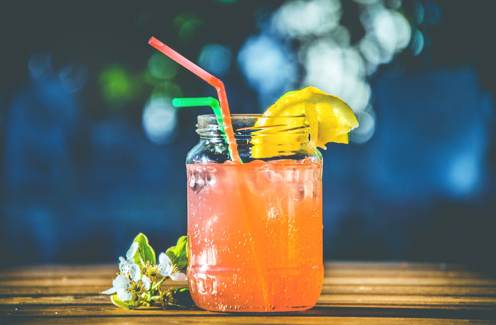
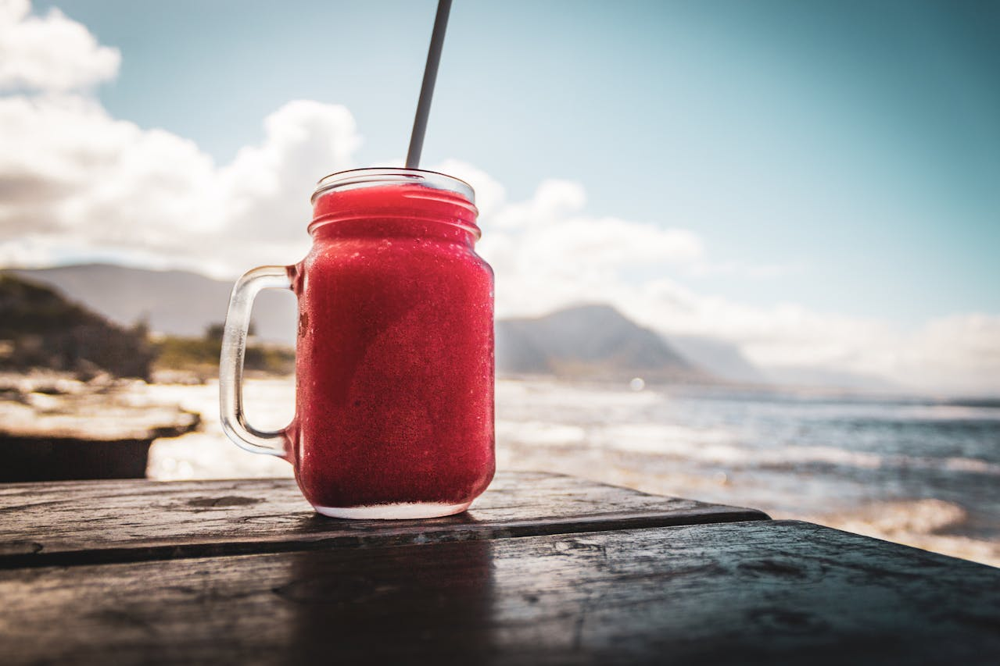
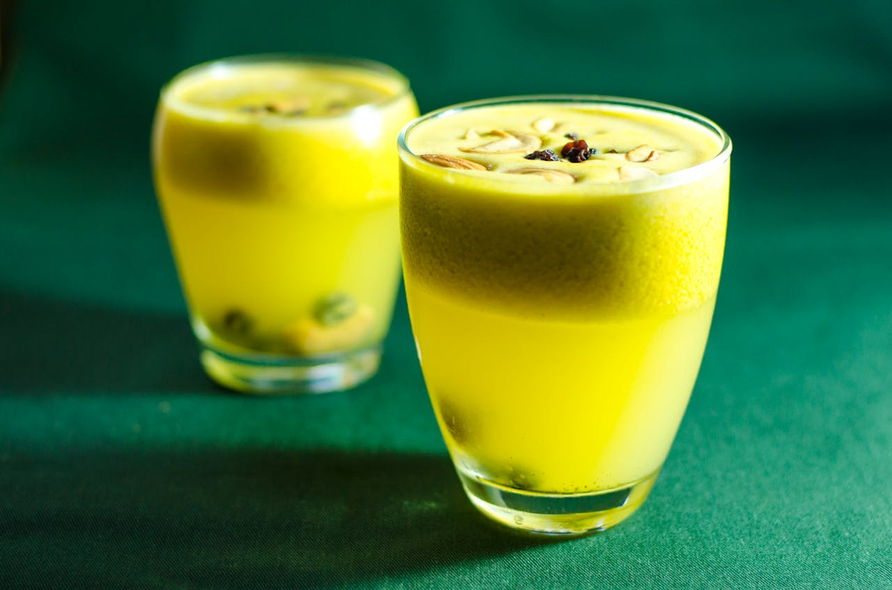
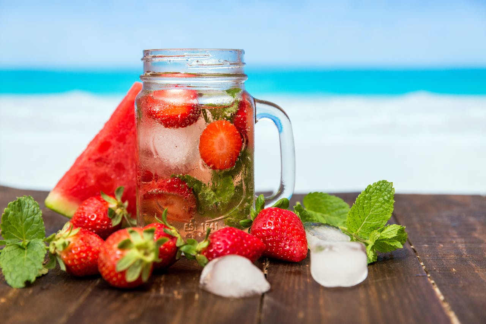
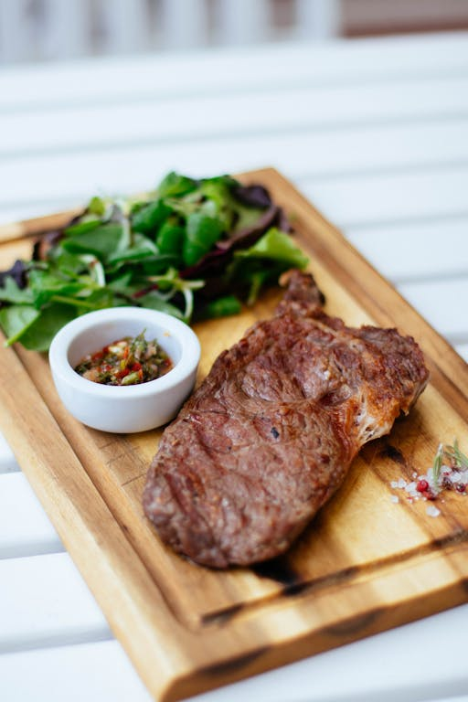
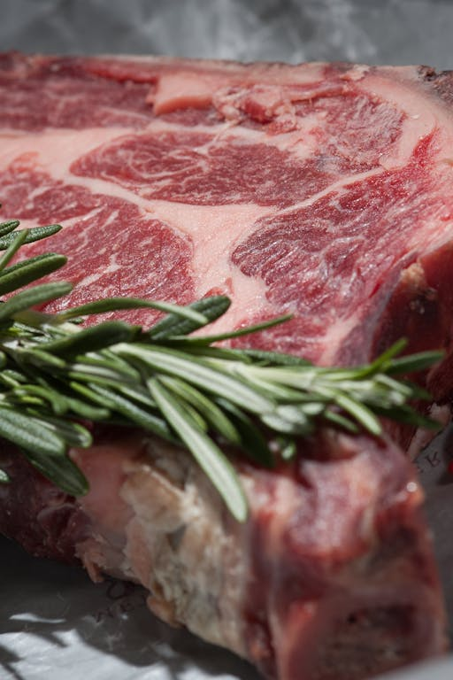

Menu de pratos
Costela suína assada

costela selecionada do melhor barrão da região da cidade.
Sopão de verduras
sopinha de letras
Macarrão da italia

macarrão diretamente da noruega.
Filé mal passado
costela selecionada do melhor barrão da região da cidade.
Peixe cru
costela selecionada do melhor barrão da região da cidade.
Bife cru
costela selecionada do melhor barrão da região da cidade.
Bife na tábua
costela selecionada do melhor barrão da região da cidade.
Bife végano
costela selecionada do melhor barrão da região da cidade.